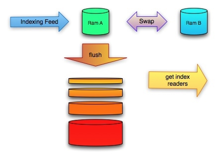

Zoie
Zoie is a real-time search and indexing system built on Apache Lucene.
Donated by LinkedIn.com on July 19, 2008, and has been deployed in a real-time large-scale consumer website: LinkedIn.com handling millions of searches as well as hundreds of thousands of updates daily.
News: Zoie 2.0.0 is released (here) - Compatible with Lucene 2.9.x.
In a real-time search/indexing system, a document is made available as soon as it is added to the index.
This functionality is especially important to time-sensitive information such as news, job openings, tweets etc.
Design Goals:
- Additions of documents must be made available to searchers immediately
- Indexing must not affect search performance
- Additions of documents must not fragment the index (which hurts search performance)
- Deletes and/or updates of documents must not affect search performance.
- ...
Other features:
- fast lucene docid to uid mapping
- fast uid to lucene docid mapping (reverse id mapping)
- custom MergePolicy to produce balanced index segment management for handle realtime updates
- partial delete expunge for enhancing search performance without full optimize
- Automatic plugin to forward-rolling index
- full jmx console for indexing management/monitoring
- ...
Getting Started:
Check out the following wikis:
Architecture Diagram:

Bugs/Issus
http://linkedin.jira.com/browse/ZOIE
Facebook
Contact
John Wang (john.wang@gmail.com)
Xiaoyang Gu (xiaoyanggu@gmail.com)
Download
You can download this project in either
zip or
tar formats.
You can also clone the project with Git
by running:
$ git clone git://github.com/javasoze/zoie